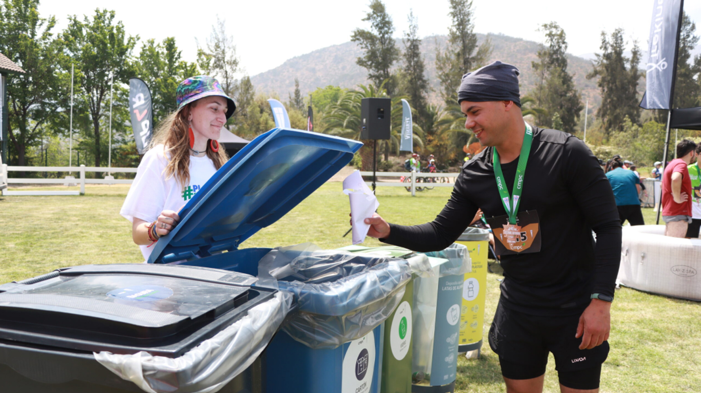

Estamos acá para crear un verdadero impacto positivo en el medio ambiente y nuestro planeta, brindando información de confianza acerca de cómo desechar nuestros residuos o cómo poder reciclarlos de manera segura y correcta.
Nuestro objetivo es mejorar la gestión de residuos en Lima Metropolitana facilitando el acceso a información, tecnología y consejos prácticos que promuevan el reciclaje, educando a personas y el cuidado del medio ambiente.
